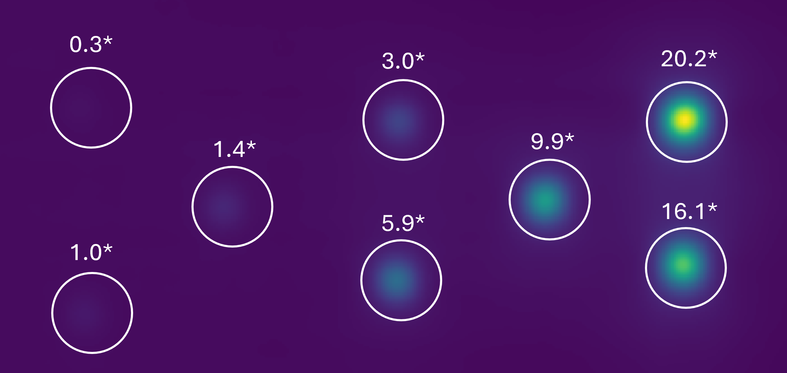

2. Analytical Methodology: The 2D Calibration Pipeline
While inherently volumetric, 2D images remain crucial for rapid iron tracking and quantification. The standard route for 2D analysis involves a sequential multi-steps data extraction workflow.
Projection
Filtering
Detection
Calculation
Calibration
Masking
3. The Fundamental Quantification Bottleneck
Despite MPI's high sensitivity and technical potential, cross- and intra-lab validation are hindered by non-standardized workflows that are inherently time-consuming, requiring multiple scans, extensive post-processing, and highly experienced users.
- Subjective identification: Visual spot detection can miss or mischaracterize low-intensity samples.
- Ambiguous delineation: User-defined Regions of Interest (ROIs) lack consensus; small boundary shifts can substantially change extracted intensities.
- Algorithmic rigidity: Fixed pipelines impose a one-size-fits-all workflow that does not adapt to diverse nanoparticle properties or complex image configurations (e.g., overlapping signals, irregular spatial arrangements).
- Compounded error: As these factors accumulate, obtaining consistent mass estimates from identical raw data becomes difficult, and repeated human decisions at each step reduce reproducibility.
4. Adaptive Logic & Synergistic Benchmarking
To completely eliminate laboratory and operator bias, we first systematically mapped the 2D calibration space under in vitro conditions. We acquired physical 2D scans of diverse SPION formulations across varying concentrations and complex spatial arrangements, including both single and multiple sample images. Crucially, every single algorithmic output was strictly validated against absolute iron mass determined via ICP-OES (our gold standard).
By evaluating combinations of over 40 classical methods and 10 machine learning models, competing across filtering, peak detection, and ROI segmentation, we benchmarked over 1.1 million unique pipeline configurations to identify the exact mathematical synergies capable of achieving >99% linearity between the ICP-OES ground truth and the iron mass quantified by the pipeline.
This linearity is measured by the coefficient of determination (R2), which defines exactly how much of the observed physical data is successfully explained by the model.
This massive foundational dataset directly powers our automated framework. The system uses a "Smart Selector" to analyze raw image parameters (e.g., global SNR, peaks FWHM) and dynamically construct the optimal mathematical pipeline for that specific scan:
- Filtering: Performs precise noise reduction and peak enhancement depending on specific image conditions.
- Peak Detection: Selects the optimal signal regions while ignoring false positives.
- ROI Masking: Adapts boundary delineation to maximize true signal area while avoiding overlap and background noise.
5. Proposed Adaptive Pipeline
By leveraging the optimization strategy outlined in Section 4, the framework eliminates user subjectivity and sensitivity to specific lab setups, thus enabling repeatability and cross-laboratory standardization for generic MPI 2D images.
1. Adaptive Analysis
Automatically selects the optimal pipeline for each dataset.
2. Accurate Quantification
Reduces variability and improves reliability in iron mass estimation.
3. Open & Evolving
Free, open-source framework, under continuous development.
(Entropy · SNR · dynamic range · FWHM · eccentricity · peak count)
(Filtering → Detection → ROI Selection).
3-Steps Pipeline.
based on given initial iron mass for at least 1 sample.
6. Results and Conclusions

Fig. 5: Quantitative validation of the adaptive framework. (A) 2D MPI projection of eight IONP samples prepared with varying iron masses. (B) Linear correlation between framework-quantified intensity and absolute ICP-OES reference standards. The adaptive selection yields a least-squares fit of R2 = 0.997, demonstrating near-perfect agreement across the entire dynamic range.
- First standardization framework for absolute 2D MPI iron quantification, which enables cross-laboratory and longitudinal reproducibility.
- Linear (R2 > 0.99) calibration curve relative to ICP-OES standards.
- Algorithmic selection of the calibration pipelines (validated over >1.1M instances across diverse SPION and setup conditions) that outperforms any fixed-pipeline approaches.
- Custom peak detection surpasses standard mathematical and ML benchmarks.
- Open-source code, promoting community-based build-up and further development.
7. Limitations and Perspective
Limitations
This computational approach is validated exclusively on in vitro 2D datasets. Direct translation to complex biological environments requires further investigation.
Perspective
- Translational Validation: Extending to ex vivo and in vivo scenarios characterizing highly irregular spatial iron distributions.
- Signal Deconvolution: Applying mathematical deconvolution models to separate overlapping Point Spread Functions (PSFs) characteristic of dense in vivo accumulation.
- 3D Expansion: Adapting the algorithms natively for volumetric datasets.